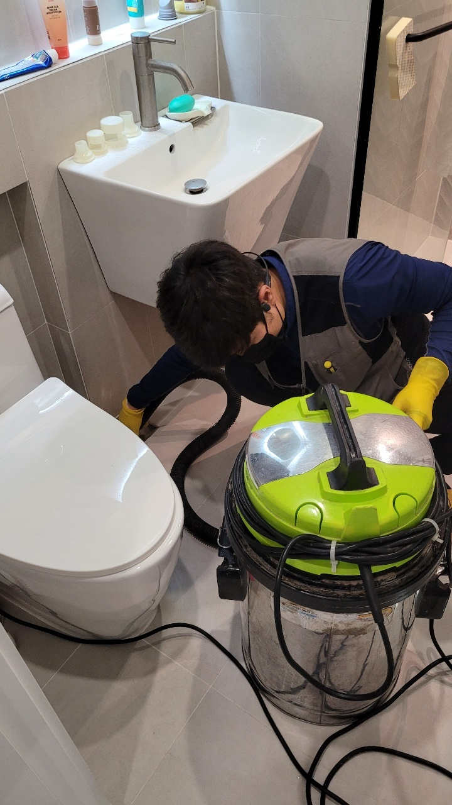
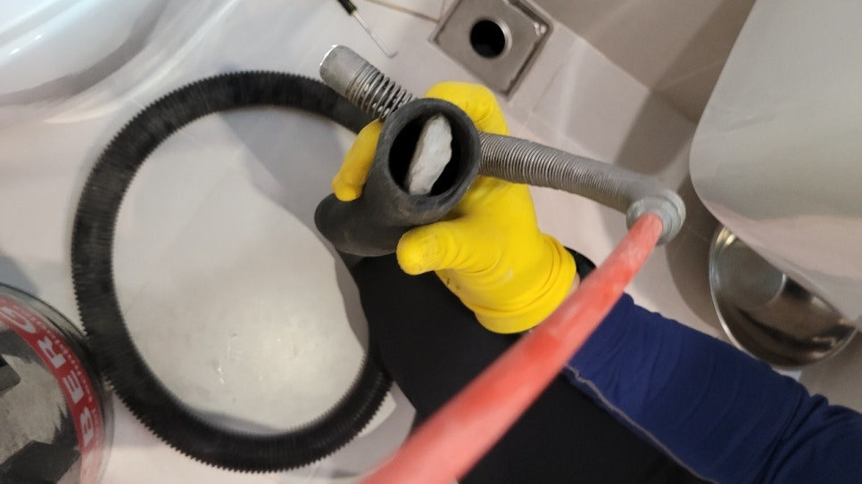

🏠 기흥구 욕실하수구막힘 깔끔하게 해결 제대로 해드린 현장입니다!
용인 기흥 싱크대막힘 전문 시공 후기

📋 작업 개요
- 위치: 용인 기흥, 기흥, 용인
- 서비스 유형: 싱크대막힘, 변기막힘, 하수구막힘, 배관막힘, 역류해결, 악취차단
- 작업 일시: 2022. 12. 20. 22:32
- 업체명: 하수구수사대 (010-5615-2118)
🔍 문제 상황
안녕하세요. 하수구수사대입니다.
일상에서 생활을 하다가 쉽게 발생하는 설비 문제는 여러가지의 불편함을 줄 수 있습니다.
이러한 설비들은 주로 욕실에 설치되어 있는 변기나 바닥의 배수구 그리고 욕조나 주방의 싱크대 등등이 있을 수 있는데요. 하수구가 막히게 되면 생활의 불편함이 이만저만이 아니라고 할 수 있습니다.
예기치 못하게 이러한 문제가 발생하게 되면 어떻게 해결을 해야 하는지 궁금해하시는 분들이 많으실 거라고 생각합니다. 이번에 말씀을 드릴 현장은 기흥구 욕실하수구막힘 깔끔하게 해결을 위해서 방문한 곳이었는데요. 이번 현장을 통해서 하수구막힘의 원인을 파악하고 해결하는 방법에 대해서 자세하게 알려드리도록 하겠습니다.

🔎 원인 분석
💡 전문가 진단: 일상에서 생활을 하다가 쉽게 발생하는 설비 문제는 여러가지의 불편함을 줄 수 있습니다.
기흥구 욕실하수구막힘 깔끔하게 해결 현장에서
거주를 하고 계시는 고객님께서는 어느날 잘 이용을 하고 있었던 욕실에서 어느 날부터 갑자기 물이 배수가 되지 않는 현상이 생기게 되면서 큰 불편함을 느끼게 되셨다고 합니다.
평소에 잘 사용을 하고 있었던 욕실이 어느날 갑자기 물바다가 되어서 사용하지 못하게 된 상황이라 당황할 수밖에 없었는데요. 배수가 잘되지 않다가 또 갑자기 역류가 발생하기도 했기 때문에 빠르게 작업을 할 필요가 있었습니다.
경기도 용인시 기흥구 동백중앙로 191 8층 c8736호

🔧 작업 과정
우선적으로 막힘의 원인을 확인하기 위해서 배관의 내부를 확인하는 작업을 해보기로 하였습니다.
기흥구 욕실하수구막힘 깔끔하게 해결을 위해서 입구에 고여있는 물을 먼저 제거하는 작업을 하였는데요. 물이 바닥 위로 차올라와서 화장실의 내부는 거의 보기 어려운 상황이었습니다. 입구 부분은 석션기를 이용해서 고여있는 물과 이물질 덩어리 들을 제거를 해서 작업하기 좋은 상태로 만들어주었습니다.
다음으로는 본격적으로 문제를 해결하기 위한 작업으로 하수구 커버부터 분리를 해서 내부를 확인하는 작업을 하였습니다. 가정집 화장실 같은 경우에는 악취를 차단하기 위한 것으로 커버가 씌워져 있는 곳들이 많이 있는데요. 이렇게 커버가 있더라도 배관 내부의 악취는 지속적으로 유입이 될 수 있는 것입니다.
배관 내에는 많은 양의 이물질들이 자리를 잡고 있기 때문에 내부에서부터 올라오는 악취일 수 있는데요.
내시경을 통해서 내부의 상태를 확인해 보았을 때 안쪽에는 각종 기름때와 석회질 그리고 머리카락 등의 여러 형태들의 이물질들이 자리를 잡고 있는 것을 확인할 수 있었습니다. 이렇게 시간이 오래 지나게 되면 이물질들이 배관 벽면 쪽에 강력하게 흡착이 되기 때문에 강한 악취까지 동반될 수 있는 것입니다.
보통 욕실 배수구 같은 경우는 평소에 샤워를 하면서 발생을 하는 각질이나 머리카락 등의 이물질들이 뭉쳐지게 되면서 막힘이 많이 발생하는 공간이라고 할 수 있습니다. 그래서 내부를 차지하고 있는 오래된 덩어리를 모두 제거하는 것이 필요한데요. 이때는 석션기 장비를 이용해서 이물질들을 제거하게 됩니다.
배관 내시경을 이용해서 내부에 있는 이물질들을 확인을 하면서 제거를 합니다.


✅ 작업 완료
그렇기 때문에 근본적인 원인 해결이 될 수 있는 것이 가장 큰 장점이라고 할 수 있습니다. 그러므로 이렇게 하수구 막힘이 발생한 경우에는 전문 업체를 통해서 해결을 하시는 것이 근본 원인 해결을 하시는 것이라고 할 수 있습니다.
우리가 일상생활을 하면서 이렇게 하수구 배관이 막히게 되는 경우에는 당연히 당황스러워할 수밖에 없는데요. 혼자서 해결을 하시기보다는 전문가를 통해서 해결을 하시는 것이 시간이나 비용적으로도 도움이 될 수 있습니다. 욕실하수구막힘 배관 내의 이물질들을 모두 제거하고 물이 원활하게 흐르는 것을 확인한 후에 모든 작업을 마무리하였습니다.



⚠️ 주방 싱크대 배관 막힘 예방 수칙
- ✅ 기름기가 묻은 식기나 프라이팬은 설거지 전 키친타올로 반드시 기름때를 닦아내세요.
- ✅ 주기적으로 싱크대 개수대에 뜨거운 물을 가득 받아 한 번에 내려 배관 내부 기름을 씻어내세요.
- ✅ 배수구 거름망을 미세한 필터로 사용하시고 음식물 찌꺼기가 틈으로 새어 들지 않게 관리하세요.
- ✅ 베이킹소다와 식초를 뜨거운 물과 함께 일주일에 한 번씩 부어주면 배관 살균과 막힘 예방에 좋습니다.
💡 핵심 정리
- 확실한 장비 작업(내시경 점검 및 샤프트 스케일링)으로 원인을 뿌리 뽑습니다.
- 작업 후 1년 이내에 동일한 부위 재발 시 100% 무상 A/S 서비스를 보장합니다.
- 서울 · 경기 · 인천 전 지역에 24시간 언제든 긴급 출동할 수 있도록 항시 대기 중입니다.
❓ 자주 묻는 질문 (FAQ)
🚨 용인 기흥 싱크대막힘 문제로 고민이신가요?
정확한 원인 진단과 확실한 시공으로 재발 없는 해결을 약속드립니다.
24시간 긴급 출동 | 서울 · 경기 · 인천 전지역 | 1년 내 재발 시 무상 A/S